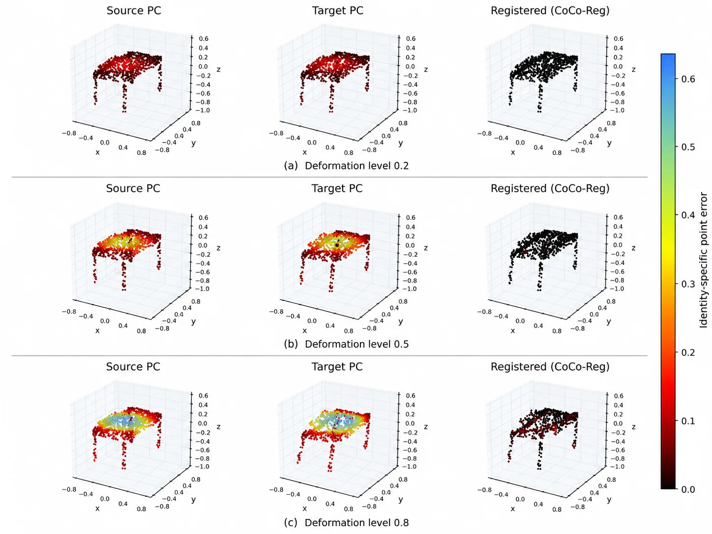

CoCo-Reg：非刚性形变下不设硬承诺的稳健稠密对应
Context without Commitment: Robust Dense Correspondence under Non-Rigid Deformation
用区域 patch 信息丰富稠密特征、但不在最终搜索前做硬 patch 剪枝；726 个 ModelNet10 物体上 MCE 0.0547 对 DefTransNet 0.1993（低 72.6%），在 670/726 配对物体上更好，物体级失败率 12.4% 对 53.6%。
MCE
reduction
failure rate
win rate
作者、单位与技术谱系 · Research context
作者与单位
研究脉络
- DefTransNet方法基座关系：CoCo-Reg 保留其稠密特征、位移骨干与 sLBP 后端，作为最接近的架构参照与主对照。[论文第 3 节]
- Robust-DefReg对照基线关系：作为第二个近期非刚性配准基线，在相同配对与目标置换上评测。[论文第 3 节表 1–6]
- 本篇推进：context without commitment本篇推进关系：提出用区域上下文丰富稠密特征但不硬限制最终点级搜索的原则，并给出恒等校正多正样本监督。[论文第 2、4 节]
合作网络
- MIISM / Heidelberg University 同一单位共同署名Yuzhen He → Sara Homscheid关系：共同署名（同一单位）[arXiv 首页署名（论文 TeX 作者块）]
- 对 DefTransNet 与 sLBP 的依赖关系CoCo-Reg → DefTransNet 特征 / sLBP 后端关系：明确技术依赖[论文第 2、3 节]
作者与单位取自论文首页署名（作者块见 e-print TeX）；论文本体是通用非刚性点云配准方法，作者单位在医学信息机构但研究内容非医疗方向。
方法本质拆解 · What actually changed
是不是微调？
不是大模型微调，而是从头训练一个建立在 DefTransNet 特征与 sLBP 骨干之上的 patch 分支：新增 FPS patch 构造、几何偏置自注意力、源-目标交互、可学相似度尺度与残差投影。损失是点位移 L1 与 patch 项（多正样本 + best-overlap）按 0.10 权重的联合；每个方法只报告一个最终 checkpoint。
有没有额外约束？
输入是源/目标点云（目标顺序被打乱，对应恒等不提供给网络）；额外约束来自 patch 监督：把点级真值重叠换算到“恒等空间”生成多正样本集合（重叠阈 0.10），以及对 patch 相似度加可学尺度 γ（初始化 8、限制在 [1,30]）。关键是这些约束只作用于特征，不作用于最终搜索——patch 预测不构成硬性剪枝。
推理/后端到底做了什么？
最终位移由 sLBP 在完整目标云上打分得到：对每个源点先给所有目标点打分，再保留全局 Top-128 候选；patch 分支只以 0.10 的残差改写稠密特征，从而改变点级排序而不改变候选全集。这与硬粗到细“先选 patch 再在 patch 内匹配”的后端有本质区别。
方法本质是什么？
本质是把区域上下文的作用点从“搜索空间”移到“特征空间”：区域信息只让每个点拥有更大空间上下文，但不能通过提前排除目标点来承担责任，于是错误 patch 关系不会直接删除正确对应。它改变的是匹配的稳健性来源（特征判别力），没有做的是处理部分重叠、噪声与真实形变——那被作者列为未来工作。
输入源/目标点云（顺序打乱），改变的位置是稠密特征（经 patch 上下文残差）而非搜索空间，合并动作为多正样本 patch 监督 + 全局 sLBP 点级选择，直接效果是错误 patch 关系不再删除正确对应。

动机与问题Motivation
动机与问题
非刚性配准里，点级匹配保留完整目标云但当局部几何相似时对应会歧义；区域或粗到细方法提供更大空间上下文，但一次错误的区域匹配可能在稠密匹配前就排除正确的点对应。作者要的是“用区域上下文丰富特征、但不让 patch 预测封锁最终的点级搜索”。
方法Method
方法总览
保留 DefTransNet 的稠密特征与位移骨干以及 sLBP 后端；对源/目标各用 FPS 选 32 个 patch 中心、每点归其最近中心，token 由 FPS 中心特征初始化（而非池化），四头自注意力带基于中心距离的几何偏置，再做双向源/目标交互；patch 相似度用可学尺度的余弦分；用恒等校正的点重叠构造多正样本与 best-overlap 交叉熵监督；最后把每个点所属 patch 的最终 token 以 0.10 的残差经 ψ 投回稠密特征，交给 sLBP 做全局 Top-128 候选选择。
关键技术细节
关键区分在“context without commitment”：patch 交叠监督在点恒等空间计算（因为目标是打乱顺序的），重叠阈 0.10、fallback 取最大重叠目标，从而允许一个源 patch 形变后对应多个合法目标 patch；相对地，硬粗到细会把错误 patch 关系当硬约束。恒等保留使作者能用真值对应位移计算 MCE，而不是到最近点；并用 20,000 次配对 bootstrap 与 Wilcoxon、rank-biserial 做统计检验。

实验Experiments
实验设置
ModelNet10，每物体 1024 个归一化表面点；源云按受控等级 ℓ∈{0.1..0.9} 平滑形变，并含相对刚体位姿变化（旋转角仅用于描述性分层）。训练用标准 3,991 网格，908 测试网格确定性地按形变等级分成 182 验证 + 726 最终测试。指标为 MCE（平均对应误差，对已知对应而非最近点）、Chamfer、HD95、median/P95 与物体/点级失败率；对照 DefTransNet 与 Robust-DefReg，逐项在相同配对与目标置换上评测。
实验数字与比较
总体：CoCo-Reg MCE 0.0547±0.0693，对 DefTransNet 0.1993±0.2165、Robust-DefReg 0.1921±0.2001；配对均差 −0.1447（95% CI [−0.1585,−0.1314]），胜率 92.3%，rank-biserial 0.960，Wilcoxon p≈2.89e−111。物体级失败 90/726（12.4%）对 389/726（53.6%），配对差 −41.18 个百分点（CI [−37.47,−44.90]，McNemar p=1.45e−85）；点级误差 >0.1 的比例 17.3% 对 47.3%。Chamfer 0.0108 对 0.0170，HD95 0.0682 对 0.1015。九个形变等级全部占优，等级 0.9 时 MCE 0.1039 对 0.3432、胜率 100%。
消融/失败边界
论文的关键对照是硬 patch 限制（Fig.1 下图）与本文的软残差投影：硬路由会在错误 patch 匹配时移除正确点对应，而 CoCo-Reg 只让 patch 上下文改变稠密特征排序。它报告所有十个 ModelNet10 类别与三个旋转组的配对差都为负（类别胜率 85.1%–96.5%），说明增益不是某一类驱动。不足是：每个方法只有单个最终 checkpoint，因此无法区分训练随机性与方法效应，也没有单独消融 patch 数量、重叠阈值、残差强度等超参。
局限与迁移Limitations & Transfer
局限与待核验
作者明确承认：评测基于完整 ModelNet10 的受控合成形变、每方法单 checkpoint，未覆盖部分重叠、噪声、离群、拓扑变化与真实形变表面；也没有 matched multi-seed 与独立的硬路由变体，所以无法精确分离各组件贡献。待核验：真实扫描/部分重叠条件下的表现。另需注意作者单位是医学信息机构，但论文本体为通用几何方法（ModelNet10），不属医疗方向。
与你研究路线的关系
核心可迁移原则是“把粗层信息作为软先验丰富细层表示，但不要在细层搜索前做硬性剪枝”——这与我们在状态估计/地图维护里“先验只能引导、不能排除正确观测”的原则一致。它的恒等校正重叠监督与配对统计（bootstrap/Wilcoxon/rank-biserial + 失败率）很适合直接搬到我们评价几何模块时使用，避免只看均值；失败率从 53.6% 降到 12.4% 的写法也提醒我们：平均误差之外要单列尾部失败。